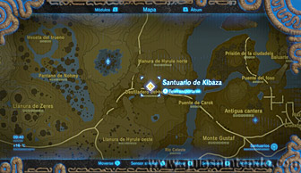
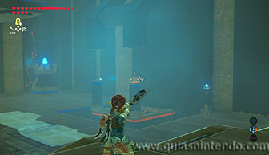
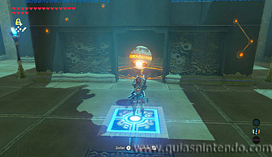
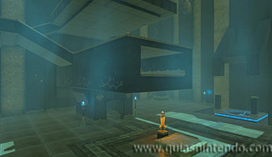
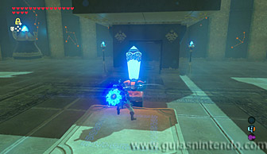
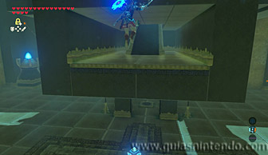
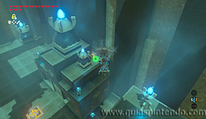
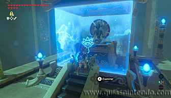

Puedes entrar en este santuario desde que llegas a la región de la torre de las colinas. Se encuentra al sureste de la torre, en el cañón situado allí.

Al entrar verás una puerta cerrada al frente y si te giras a la derecha verás una esfera sobre una columna. Dispárale una flecha para hacer que caiga al agujero que hay abajo. Al hacerlo se abrirá la puerta que hay al frente dejando a la vista una segunda esfera.

Coge esa esfera y ponte sobre el interruptor del suelo. Así se abrirá la compuerta y podrás lanzar la esfera al agujero que hay tras ella. Cuando lo hagas se pondrá en marcha una gran plataforma en el centro de la sala.

Ahora tienes que colocarte junto al interruptor de cristal y golpearlo para salir impulsado hacia arriba. Debes hacerlo de tal forma que la plataforma se esté ya acercando y así puedas colarte dentro de ella.

Si avanzas por ahí dentro encuentras el camino para llegar al altar del santuario, aunque antes puedes ver un cofre situado a lo lejos y llegar planeando a él para conseguir un Arco real.

Vuelve a subir del mismo modo que antes y cuando llegues al altar podrás examinarlo para obtener un símbolo de valía.
